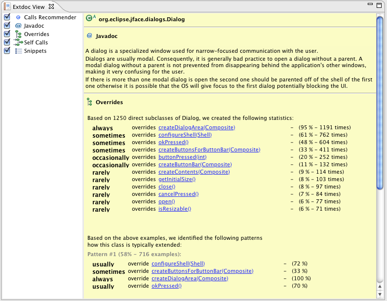

Table of Contents
Code Recommenders supports developers learning new APIs by providing tools which learn correct API usages or valuable patterns by analyzing example code and re-integrates this knowledge back into your IDE.
Put differently, it helps your team to cut down development costs when dealing with new APIs by means of intelligent code completion, extended documentation, smart bug detection systems and others - all powered by the knowledge of the programming masses.
Code Recommenders is a set of IDE extensions for the Java programming language. In version 1.0, recommenders consists of two large component groups:
5 Intelligent Code Completion Engines,
4 Extended Documentation Providers,
which will be introduced in detail below.
The intelligent call completion engine probably illustrates the idea of Code Recommenders best. When
dealing with Framework APIs, developers frequently have to deal with complex APIs. For illustration,
consider the public API of
javax.swing.JButton
which consists of
381
public methods. A huge API of which a developer typically only has to know a small subset. The
remaining, say, 360 methods bloat the API (from a API user's viewpoint) and thus unnecessarily increase
the complexity of learning and using this API.
All potential completions for
JButton
This is where Code Recommenders intelligent call completion comes in. It assists developers by recommending him only those methods that are actually relevant for his task at hand. For instance, given that a developer just created a text widget makes it obvious for Code Recommenders which methods a developer wants to use next - even if the developer doesn't know it by himself:
Recommenders' Intelligent Completion on SWT Text after calling
new Text()
At the time of writing this section (1.0.0.rc2), Code Recommenders partially supports the Java Standard Library, namely the main packages under java.* and some packages under javax.* . As the recommendation models are generated from the Eclipse Juno Release Train code base only, packages like java.awt or javax.swing are not supported as no data was available at generation time. For a detailed list of which libraries or packages are supported, check the reports section on the Code Recommenders home page.
Code templates are helpful when code is needed to iterate over an array of objects or when creating a getter for a property of a class. But code templates really shine when developers have to use APIs they are not very familiar with. Then, code templates serve as additional documentation that quickly shows how an API can be used and save developers lot of time otherwise needed for reading API documentation.
Eclipse maintains more than 70 of such Java code templates - ranging from simple
for
loops up to complex API usage patterns like creating an SWT
Button
or
Composite
. Unfortunately, developing templates for API usage patterns is
extremely
costly and tedious - and in consequence only few templates for few APIs exist.
This is where Code Recommenders comes in again. In the previous section we showed how to recommend single methods to invoke on an object. Templates completion takes this to the next level by recommending not only single methods but complete sets of methods:
Intelligent Template Completion on JDT
ASTParser
As you probably have noticed in the example above, Recommenders' templates completion can be applied on existing variables to complete existing usages but also works on type names as the example below shows:
Intelligent Template Completion on JFace
TableViewer
The final result after applying the template looks as follows:
Resulting code snippet for JFace
TableViewer
The generated template proposals do not reflect method execution ordering constraints, i.e., the order of the proposed method may have to be changed manually after insertion.
Template Completion yet has no configurable options. Note that Templates Completion can not be run on the default content assist. As soon as it detects it was configured for default content assist it immediately deactivates itself. This decision was made because of performance reasons. Computing likely code snippets is a computation-intensive task developers should trigger explicitly.
Similar to recommending method calls, one can also recommend which methods a developer should typically override. This is what Recommenders intelligent overrides completion does. We'll discuss class extension patterns in more detail in the extended documentatiton chapter below.
Recommenders' Intelligent Overrides Completion on JFace
Dialog
You probably know JDT's CamelCaseCompletion . This is a nice engine but requires you to remember exactly the uppercase letters of the completion proposal you want to insert. Subwords makes this more convenient. The idea is simple enough - you should not have to type a name from the beginning to find a match in the content assist popup. It helps when a developer doesn not know if one has to 'find' - or - 'get' an element.
Recommenders' Subwords Completion on JDT's
CompilationUnit
The feature is sophisticated enough to understand a rough shorthand e.g. dclr for declaration .
Recommenders' Subwords Completion Completion on JDT's
AST
It is also sophisticated enough to understand that a method or type name in Java is composed of several words e.g. 'ty + dclr' finds all 'type' + 'declarations'.
Recommenders' Subwords Completion Completion on JDT's
AST
Subwords does not fall into the group of intelligent completion engines, i.e., it does not need any training data and thus works with any framework or API out of the box.
This section is based on the work of Deepak Azad, JDT Committer, source: http://blog.deepakazad.com/2012/05/
Note that Subwords can not be used together with JDT's or Mylyn's content assist engines. It actually disables itself immediately as soon as it detects that either Mylyn or JDT is enabled on the default content assist list. To use Subwords on the default (first) content assist list, you have to explicitly disable JDT and Mylyn and enable Subwords via » » » » »
Subwords offers a shortcut for doing this enable and disablement automatically. Visit the Subwords preference page to use that shortcut.
Subwords Preference Page: Configuration Shortcut
Recommenders' Chain Completion on
IStatusLineManager
in a
ViewPart
Note that Recommenders Chain completion cannot be used on the default (first) content assist list. It actually disables itself immediately as soon as it detects that it was configured for the default list. The main reason for this is, that chain completion is essentially an exhaustive search that consumes a lot of CPU time, and thus, should only run when explicitly requested.
Chain completion allows its search to be configurations for specia situations. To change chain completion's defaults visit its preference page under » » :
Chain Completion Preference Page
Limits the number of call chains found to max. Has the effect that search is immediately terminated after max number of chains have been found. Change this parameter to gain performance improvements.
Limits how many levels in the API call graph chain completion traverses to find matching call chains. Set this to lowerer levels (e.g. three) if you only want chain completion to find chains of the maximal lenght of three.
API graph traversal uses a time limit when searching for chains. Modify this value if chain completion does not find the propsoals due to time limits. Please note that JDT has a built in performance measure and brings up a warning if a content assist engine needs longer thatn 4.5 seconds.
Some type result in far too many proposal, like
java.ang.String
. Such types can be explicitly excluded from search by adding them to the ignore
list.
Writing documentation is one of those tasks programmers are typically not very keen about. It is time-consuming, tedious, and has almost no immediate rewards. Consequently, documentation is (too) often incomplete (or even worse) completely outdated.
But good and comprehensive documentation is crucial for the success of a library or framework. Tools exist, that generate documentation from source code (i.e., extracting obvious information from code and generating more or less helpful javadoc comments). Such approaches seem valuable at first, but finally this kind of documentation only pleases our manager since it improves on the source code to documentation ratio; from a developer's point of view this documentation is rather useless.
However, there are many other resources out there that offer valuable information about an API. Stackoverflow for instance is an abundant source of information providing valuable tips on how to use a certain API or deal with errors. Code-search engines offer code snippets showing how to use an API in action etc. Many more resources exist. The Extended Documentation Platform is solely developed to serve the purpose to aggregate this the wide range of information sources available on the web into a single view in Eclipse.
The figure below shows the Ext ended Doc umentation View ( Extdoc View for short). It basically consists of two parts: a provider overview panel on the left and a content area on the right in which every provider presents its information is has for a given selection in the workspace or active JavaEditor:

Recommenders' local code-search engine is also not ready for 1.0.0., and thus, will not be part of the Juno release. However, first prototype are available and can be installed from the Recommenders' lab channel.
Code Recommenders uses precomputed
recommendation models
to make its proposals. These models are hosted under
http://download.eclipse.org/recommenders/models/«release»
and downloaded automatically on first access. Figure
???
depicts the configuration settings which are explained in details below.
The URL of the model repository Code Recommenders searches for new recommendation models when accessed.
If enabled, recommenders downloads suiteable recommendation models automatically. If unchecked no attempts are made to download models from the server.
All previously downloaded models are cached locally under
${workspace}/.metadata/.plugins/org.eclipse.recommenders.rcp/repository/
. When
is pressed, this directory is deleted. Files that could not be deleted are marked for
deletion and will be deleted on Eclipse shutdown. All models are downloaded again
automatically on next access.
It is recommended to restart Eclipse after clearing the local caches.